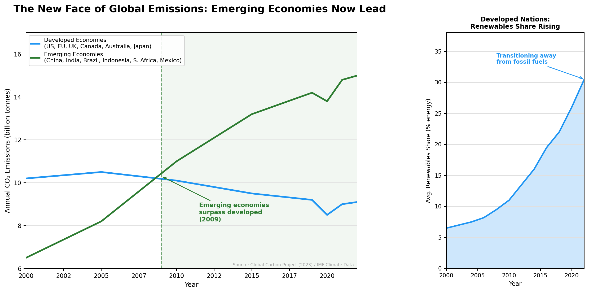
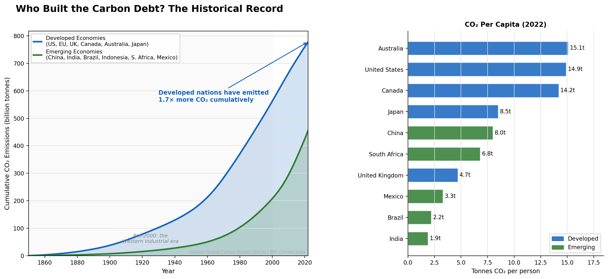

Proposition: Developed economies bear primary responsibility for the climate crisis, but emerging economies are now its dominant drivers.
FOR the Proposition

Design Decisions and Rationale:
- Cherry-picked start year (2000) [Score: −2]. Beginning the time axis in 2000 erases over 150 years of Western industrial emissions — the entire period during which developed economies built their carbon advantage. The viewer sees only the window in which emerging economies accelerated, making the crossover look like the complete story rather than a late chapter in a much longer one. Starting in 1850 or even 1960 would dramatically change the impression; 2000 was chosen precisely because it is the inflection point most favorable to this narrative.
- Truncated y-axis (starts at 6, not 0) [Score: −1.5]. The true emissions range extends down to near zero, but the y-axis begins at 6 billion tonnes. This compresses the visual field and exaggerates the apparent divergence between the two lines, making the gap look far more dramatic than it is in proportion to absolute emissions levels. No break or warning marker is shown to alert the reader that the axis has been cut.
- One-sided renewables inset (developed nations only) [Score: −1]. The inset panel shows renewables adoption rising in developed economies but includes no equivalent panel for emerging economies — many of which (China in particular) have rapidly expanded renewable capacity. The selective inclusion implies a moral asymmetry — developed nations fixing themselves while emerging nations do not — that the full data does not support.
- Color framing: blue (calm) vs. green (growth/nature) [Score: −0.5]. Blue is conventionally associated with stability and established order; green, while neutral in isolation, here reads in context as the "growing" or "encroaching" force. The pairing primes the reader to perceive the emerging bloc's rise as a threat, before a single data point is read.
- Crossover annotation and shading [Score: −0.5]. The vertical dashed line, shaded region, and bold annotation all focus the reader's attention on the moment emerging economies surpass developed ones, rhetorically framing that single crossing as the key takeaway. The annotation is accurate but its visual prominence is calibrated to persuade, not merely inform.
AGAINST the Proposition

Design Decisions and Rationale:
- Cumulative emissions frame from 1850 [Score: +1.5]. CO₂ is a stock pollutant — molecules emitted in 1900 are still warming the planet today. Showing cumulative totals from the start of industrialization is therefore scientifically defensible and arguably the most physically meaningful framing for questions of climate responsibility. The choice to start in 1850 is not arbitrary; it corresponds to the onset of large-scale fossil fuel use.
- y-axis starts at zero, full scale [Score: +2]. The y-axis runs from zero with no truncation, ensuring that the visual area faithfully represents proportional magnitudes. This is the most honest available encoding of the data and directly counteracts the deceptive compression used in Visualization 1.
- Per-capita panel alongside totals [Score: +1.5]. Per-capita normalization is a legitimate and widely used correction: a country of 1.4 billion people emitting the same aggregate CO₂ as a country of 330 million is not comparable on a per-person basis. Including both panels resists single-metric reductionism and gives the reader two independent lines of evidence pointing in the same direction.
- Country selection in the bar chart [Score: −0.5]. The bar chart includes Australia and Canada — both high per-capita outliers among developed nations — while omitting lower-emitting developed countries such as France or Sweden. This inflates the visual impression of the developed-economy average. A random or fully representative sample would be more scrupulously fair, though all included values are accurate.
- Cumulative ratio annotation [Score: 0]. The callout stating that developed nations have emitted 1.7× more cumulatively is arithmetically accurate given the country selection. However, which ratio to highlight (and which countries to include in the denominator) is itself a rhetorical choice — a wider or narrower country grouping would yield a different multiplier. The decision is neutral in execution but not fully free of framing effects.
Final Reflection
The most striking outcome of this exercise was how little fabrication was required to build two strongly opposed narratives from the same underlying dataset. Every data point in both visualizations is accurate. The deception in Visualization 1 lives almost entirely in what is absent — the pre-2000 historical record — and in one axis that does not start at zero. Neither omission involves inventing data; both involve choosing which slice of the truth to show. This forced me to revise my initial assumption that the boundary between honest and deceptive visualization would track the boundary between true and false data. It does not. The more consequential frontier is between complete and incomplete context.
I would now define ethical visualization as a practice that preserves the reader's ability to interrogate the choices being made. A truncated axis fails this test not because the displayed values are wrong, but because there is no marker or annotation alerting the reader that the scale has been cut — the deception is precisely in its invisibility. By contrast, choosing to show cumulative rather than annual emissions is a legitimate framing decision even though it is still a choice, because the axis label ("Cumulative CO₂ Emissions") makes the transformation explicit and a careful reader can ask what the annual picture looks like. The distinction I would draw, then, is not between persuasion and neutrality — all visualization involves selection and therefore persuasion — but between choices that are legible to a critical reader and choices that are designed to be invisible to one. The former is acceptable; the latter is misleading, regardless of whether any individual data point is false.